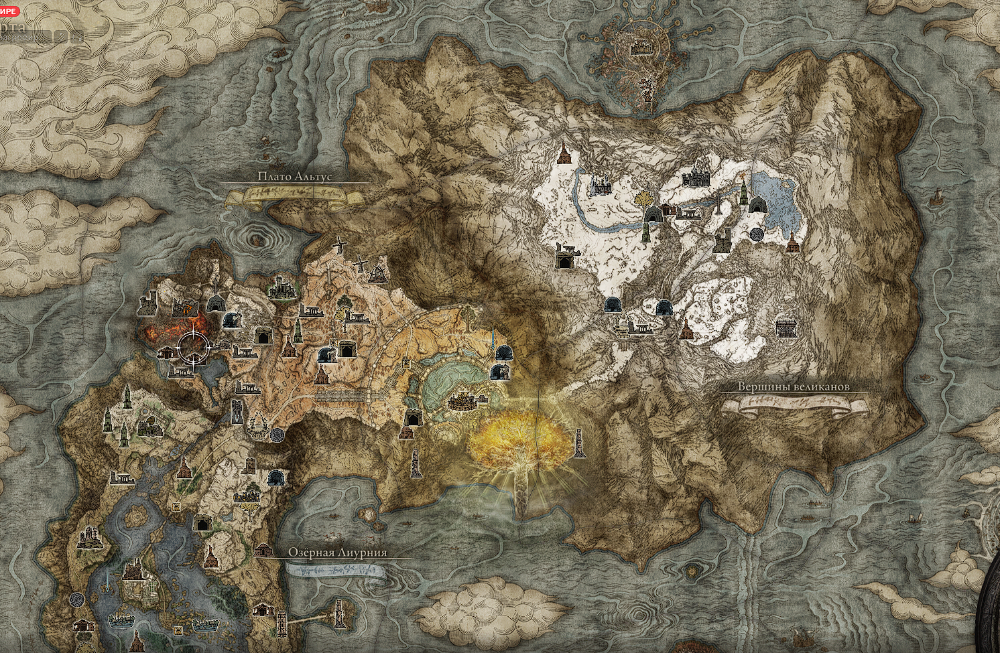

Замогилье
Замогилье — область, расположенная далеко к югу от Древа Эрд, — простирается до северо-западных скал Грозовой Завесы. Под его вечно хмурыми небесами раскинулись великие степи.
Крепость Круглого стола
Обитель, в которой Два Пальца собирают Погасших, что подают надежды одолеть владельцев Кольца Элден и занять место нового лорда. Одни из них претендуют на трон, другие надеются занять место подле престола. Есть и те, кто заключен здесь не по своей воле.
Плачущий полуостров
Полуостров — угрюмая земля, охваченная атмосферой вечного горя и потери. Осажденный Замок Морн лежит в руинах на юге региона.
Озёрная Лиурния
Земли Лиурнии, знаменитые бескрайними лесами и вечным туманом, почти полностью затоплены. По восточному и западному побережью пролегают тракты, а над северной частью возвышается Академия Райи Лукарии.
Плато Альтус
Благодаря близости к Древу Эрд, почти весь регион, кроме его западной части охвачен золотым сиянием. Здесь царит вечная осень. Именно здесь произрастает Великое Древо Эрд и находится столица всего королевства Междуземья.
Вершины великанов
Вершины великанов— это удаленный регион на далеком севере, куда герой попадает после победы над нынешним правителем континента, Морготом. Холодный и суровый, он вместил себя много тайн. Здесь можно встретить и остатки давно исчезнувшей империи троллей и затерянных в метели драконов; одинокие заселенные монстрами заставы и обледеневшие подземные пещеры.
Река Сиофра
Великая река, протекающая под Междуземьем. Говорят, что в этом огромном регионе покоятся останки цивилизаций, что процветали здесь до появления Древа Эрд.
Река Ансель
Великая река, протекающая под Междуземьем. Говорят, что в этом огромном регионе покоятся останки цивилизаций, что процветали здесь до появления Древа Эрд.
Низовье Глубокого Корня
В самой глубине величественных корней древа Эрд лежит исток рек Ансель и Сиофра. Здесь также начинается сеть корней Великого Дерева, которая распространяется по Междуземью.
Святое Древо Микеллы
Локация представляет собой крону дерева, на ветвях и стволе которого расположился подвесной город Святого Древа.
Разрушающийся Фарум-Азула
Локация представляет собой разрушенный город, поднятый и удерживаемый в небе искажённой силой гравитации. Город расположен среди бушующих штормов и населен драконами.
Звёздные пустоши
Звёздные пустоши — это бескрайние кроваво-красные долины и высокие смертоносные утесы, опасные ядовитые болота и загадочные руины. Здесь правят невиданные монстры, на вершине иерархии которых восседают драконы.
